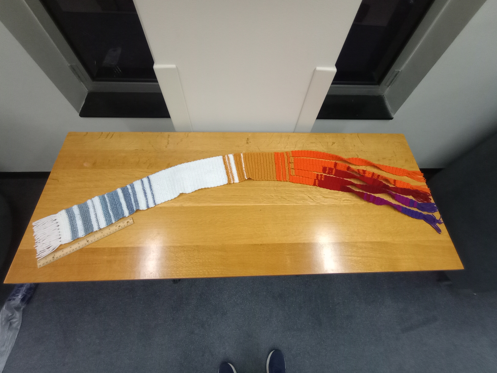
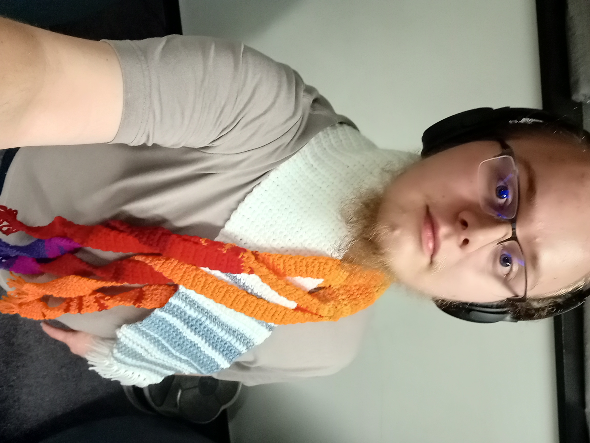

Jonah Catlin / UHP Honors Portfolio
About Me

Welcome to my Portfolio!
Hello, I'm Jonah Catlin, a graduating senior in Industrial and Systems Engineering here at NCSU.
I have compiled eleven artifacts representing some of my favorite and most interesting experiences here. Please enjoy the images, videos, and other resources. Have fun exploring!
Artifacts
Artifact 1: Mathematics Minor
Write the caption or description for this artifact here. This section intentionally has no image area.
Artifact 2: MA 326 Adopt an Algorithm Paper: Decision Trees


Describe the document here. Clicking the thumbnail opens the PDF in a new tab.
Artifact 3: MA 404 Adopt an Algorithm Pesentation: Differential Evolution


Describe the artifact and its animations here. Click the notebook thumbnail to open it in Google Colab.
Artifact 4: RISE REU Research + Poster


Describe this document here.
Artifact 5: E 101 Freshman Engineering Design Project


Describe these images here.
Artifact 6: ISE 316 Aluminum Coaster Project


Describe the three images here.
Artifact 7: Metaskill Challenge


Describe this artifact here. Click the video thumbnail to watch the YouTube video.
Artifact 8: Origami


Describe the four images here.
Artifact 9: Crochet and Knitting



Describe the two images here.
Artifact 10: Climbing


Describe the video and images here.
Artifact 11: Wind ensemble Costa Rica Trip


Describe the video and four images here.